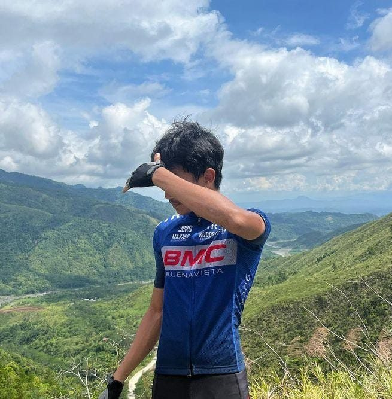
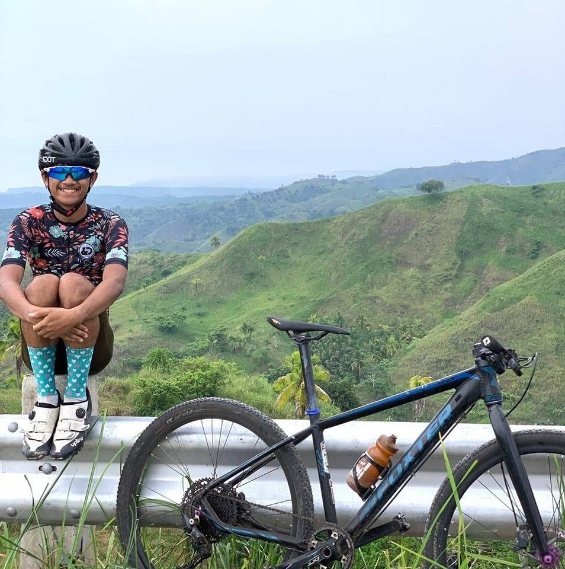
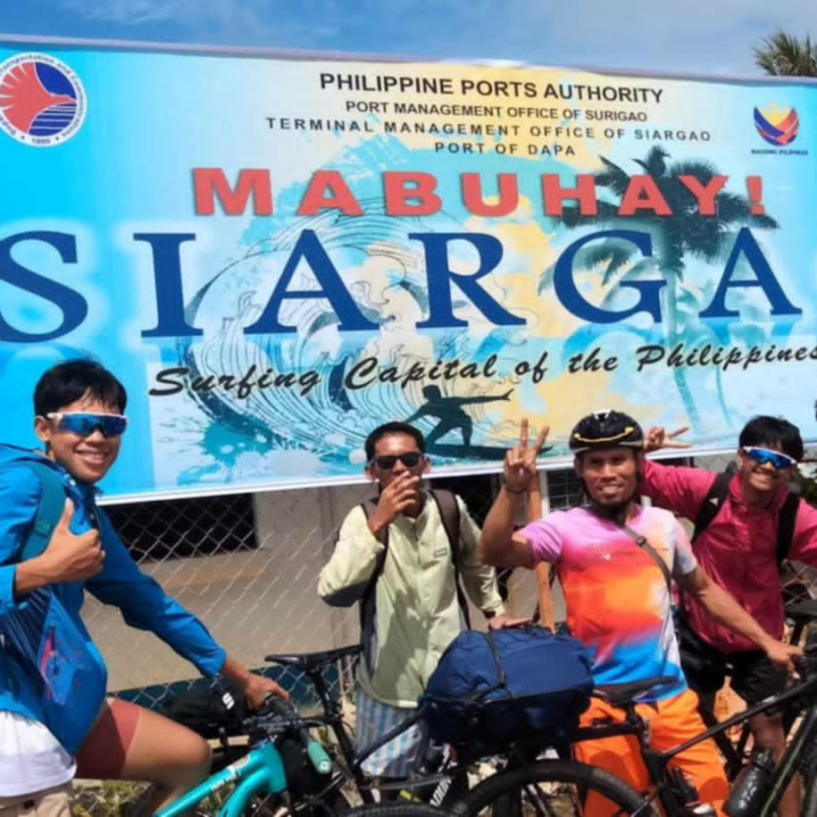
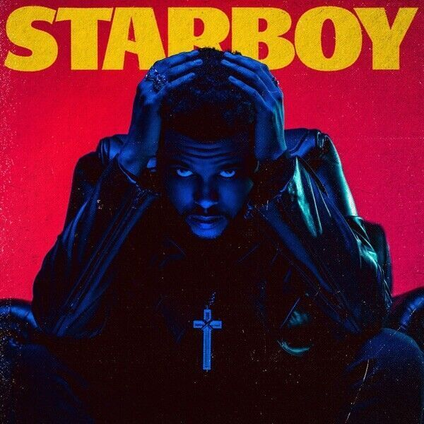
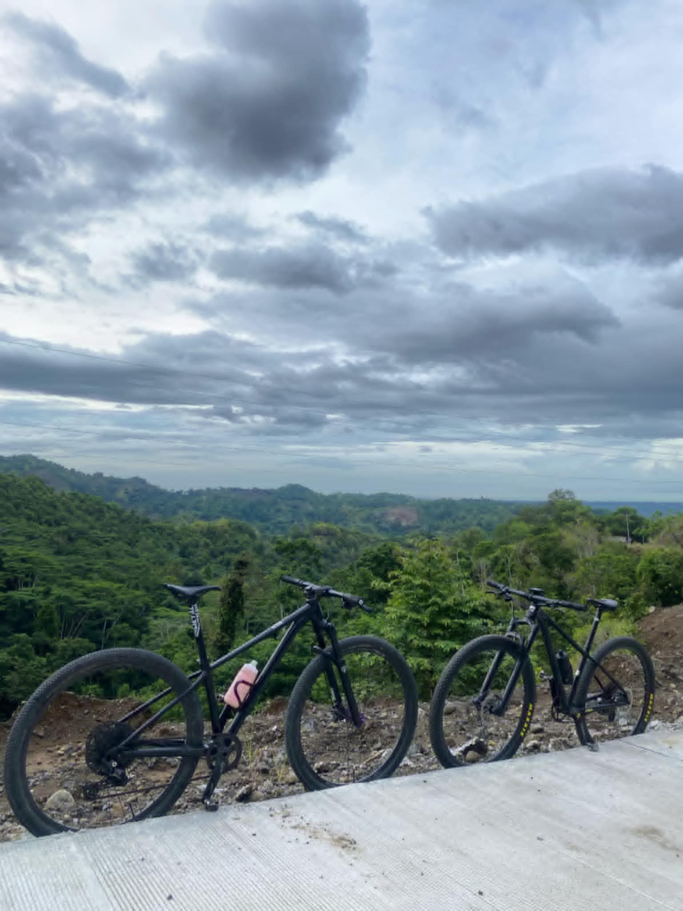

Hi, I'm Vince Carter Yamba. I am a 3rd-year irregular student at SMCC (Saint Michael College of Caraga). I am 21 years old, born on November 6, 2003, and I live in Brgy 7, Buenavista, Agusan del Norte.

Hobbies
Cycling
I love cycling because it allows me to explore the outdoors while staying fit. There's nothing quite like the feeling of the wind on my face as I ride through beautiful landscapes.

Playing Online Games
Playing online games is a passion of mine because it connects me with friends and allows me to immerse myself in different worlds. I enjoy the challenge and strategy involved in gaming, and it’s a great way to unwind after a long day.
Traveling
Traveling is one of my greatest joys. I love experiencing new cultures, trying different foods, and meeting people from all walks of life. Each trip is an adventure that broadens my perspective and creates lasting memories.

My Favorites
Favorite Food: Ice Cream
Ice cream is my favorite food because it brings back wonderful memories of summer days spent with friends and family. The variety of flavors and the joy of indulging in a scoop (or two) always makes me smile.
Favorite Artist: The Weeknd
The Weeknd is my favorite artist because his music resonates with me on so many levels. His unique sound and emotional lyrics create an atmosphere that I can connect with, whether I'm relaxing or on a road trip.

Favorite Hobby: Cycling
Cycling is not just a hobby for me; it's a way of life. I love the freedom it gives me to explore new places and the thrill of pushing my limits. It's a perfect blend of exercise and adventure.

Friends
Cycling Friends
I love hanging out with my college friends because we share similar interests and experiences. Whether we're studying together, going out for meals, or just relaxing, their support and camaraderie make my college life enjoyable and memorable.
Close Friends
My close friends are like family to me. I cherish the time we spend together, whether it's having deep conversations or just goofing around. Their loyalty and understanding create a safe space where I can truly be myself.